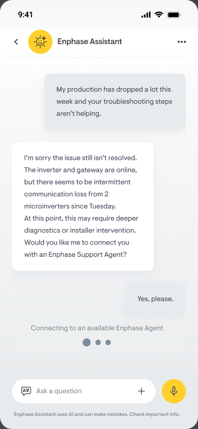
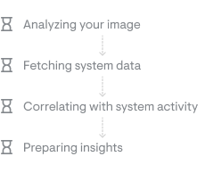
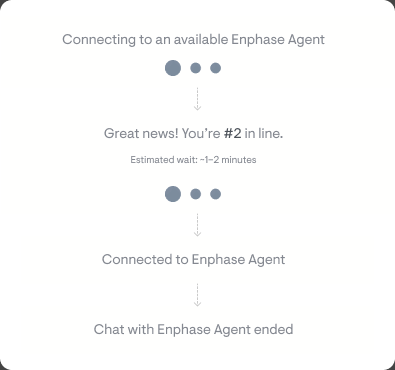
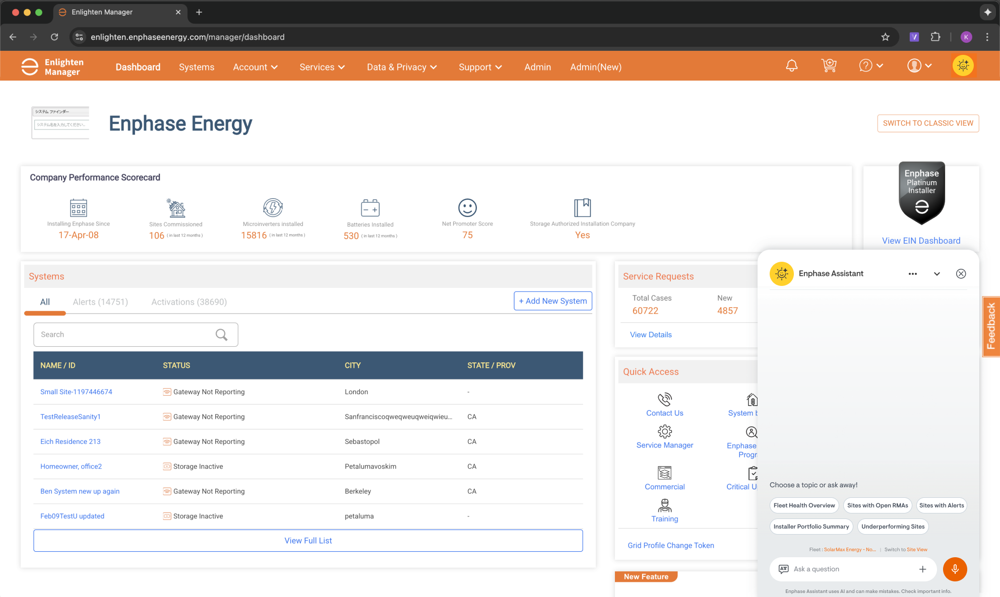
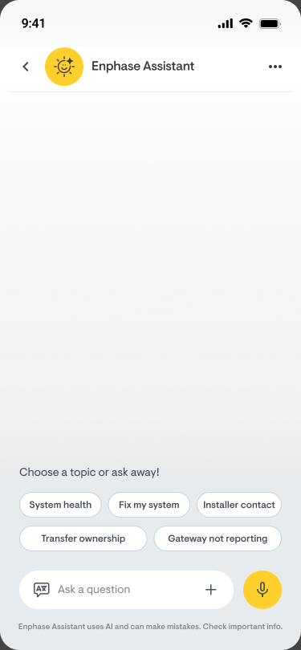
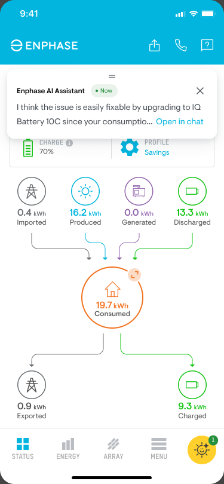

AI Design Guidelines
Grounding the experience in proven AI principles
Designing an AI assistant for something as technical as solar energy meant we couldn't wing it. I used Microsoft's 18 AI Design Guidelines as a framework to structure our design decisions, adapting each principle to Enphase's context of homeowners, installers, and support agents.
These guidelines helped me work through a real tension: the AI needed to feel smart and capable while being upfront about its limits. Here's how I mapped the most critical principles to our design:
Key principles applied
Out of 18 guidelines, these 7 shaped the most critical design decisions.
01
Graceful escalation when AI can't help
Recognize when the assistant doesn't understand the user's ask or lacks the confidence to answer accurately.
Applied: When the assistant detects low confidence or repeated misunderstanding, it proactively suggests connecting with an Enphase support agent instead of guessing.

02
Transparent thinking and loading states
Show users what's happening in the system while the AI processes their request.
Applied: Multi-stage indicators ("Analyzing your image...", "Fetching system data...", "Preparing insights...") keep users informed instead of staring at a spinner. Each query type has its own sequence of thinking states tailored to what's actually happening behind the scenes.

AI thinking steps
Handoff loading states03
Context-aware preset menus
Surface relevant quick-action options based on the user's persona and current context, so they don't have to type from scratch.
Applied: Homeowners see prompts like "Why is my bill high?" and "Check battery status." Installers see "Run commissioning check" and "Gateway LED troubleshooting." Menus adapt to active alerts and recent activity.


04
Make clear what the system can do
Help the user understand what the AI is capable of during onboarding and throughout interactions.
Applied: The assistant takes context from where it's invoked. In the Homeowner App, it opens with energy-specific prompts. In ITK, it surfaces installer workflows. On the website, it asks who you are first, then tailors the experience.
06
Equitable, persona-adaptive tone
Adapt language per persona without assumptions about technical literacy.
Applied: Tone and vocabulary adjust per persona (homeowner vs. installer) while keeping the same level of respect and clarity for both.
05
Non-blocking AI responses
Let users continue using the app while the AI generates its response, so they're never stuck waiting.
Applied: The chat runs as an overlay. Users can navigate the app, check system data, or review alerts while the assistant works in the background.

07
Take feedback and give fallback contextual menu options
When the assistant can't fully resolve a query, offer contextual fallback options instead of a dead end, and always let users share feedback on the response quality.
Applied: Every response includes a feedback mechanism. When the assistant reaches its limits, it surfaces relevant menu options like contacting support, browsing help articles, or restarting the conversation, so users always have a next step.


Why this mattered: With an AI assistant spanning homeowner apps, installer tools, support dashboards, and the public website, the number of use cases grew fast. A structured framework meant we weren't redesigning from scratch for every new context. These guidelines gave us a scalable foundation, consistent principles that held up across systems while still flexing for each persona and platform.